<!DOCTYPE html>
<html>
  <head>
    <title>Valve Cover: Service and Repair — 2011 BMW 128i Coupe (E82) L6-3.0L (N52K) Service Manual | Operation CHARM</title>
    <meta name='description' content="Detailed repair manual for the 2011 BMW 128i Coupe (E82) L6-3.0L (N52K).">
    <link rel='stylesheet' href="../style.css">
    <meta name='viewport' content='width=device-width, initial-scale=1.0' />
  </head>
  <body>
    <div class='theme-colors header'>
      <div class='branding'><b>Operation CHARM</b>: Car repair manuals for everyone.</div>
<div class=breadcrumbs><a class='breadcrumb-part' href="../">Home</a> <b>&gt;&gt;</b> <a class='breadcrumb-part' href="../BMW/">BMW</a> <b>&gt;&gt;</b> <a class='breadcrumb-part' href="../BMW/2011/">2011</a> <b>&gt;&gt;</b> <a class='breadcrumb-part' href="../index.html">128i Coupe (E82) L6-3.0L (N52K)</a> <b>&gt;&gt;</b> <a class='breadcrumb-part' href="0.html">Repair and Diagnosis</a> <b>&gt;&gt;</b> <a class='breadcrumb-part' href="0.html#Engine%2C%20Cooling%20and%20Exhaust/">Engine, Cooling and Exhaust</a> <b>&gt;&gt;</b> <a class='breadcrumb-part' href="0.html#Engine%2C%20Cooling%20and%20Exhaust/Engine/">Engine</a> <b>&gt;&gt;</b> <a class='breadcrumb-part' href="0.html#Engine%2C%20Cooling%20and%20Exhaust/Engine/Cylinder%20Head%20Assembly/">Cylinder Head Assembly</a> <b>&gt;&gt;</b> <a class='breadcrumb-part' href="312.html">Valve Cover</a> <b>&gt;&gt;</b> <a class='breadcrumb-part' href="8954.html">Service and Repair</a></div></div>
<div class="theme-colors floaty-message lemon-message">
  <b style="font-size: 1.5em; color: gold">Manuals through 2025 now available!</b>
  <br><br>
  Our trusted friends have launched a new website named LEMON, which has newer manuals. It also contains all the CHARM manuals.
  <br><br>
  LEMON is the spiritual successor to  CHARM, I recommend you try it!
  <br><br>
  Link: <a style='white-space: nowrap' href="../missing-page">lemon-manuals.la</a> or <a style='white-space: nowrap' href="../missing-page">lemon-manuals.org.ua</a>
  <br><br>
  (Some people have issue connecting. LEMON is investigating. For now, use Firefox or change your DNS server)
  <br><br>
  Or, hide this message: <a href="../missing-page">temporarily</a> or <a href="../missing-page">permanently</a>
</div>
<div class='main'>
<h1>Valve Cover: Service and Repair</h1><br><br><b>11 12 000 Removing and installing/sealing cylinder head cover (N52K)</b><br><br><br><div class='oxe-image'></div><br><br><br><br><br>Necessary preliminary tasks:<br><span class='indent-2'>&#09;</span>-<span class='indent-5'>&#09;</span>Remove tension strut<br><span class='indent-2'>&#09;</span>-<span class='indent-5'>&#09;</span>Clamp off battery<br><span class='indent-2'>&#09;</span>-<span class='indent-5'>&#09;</span>Release coolant expansion tank and place to one side<br><span class='indent-2'>&#09;</span>-<span class='indent-5'>&#09;</span>Remove acoustic cover<br><br><br><div class='oxe-image'>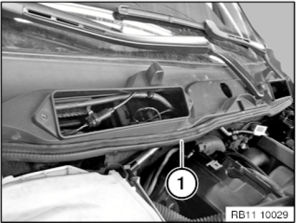</div><br><br><br><br><br><b>NOTE:</b>  Illustrations feature the E91.<br><br>Detach sealing (1) from cowl panel.<br><br><br><div class='oxe-image'>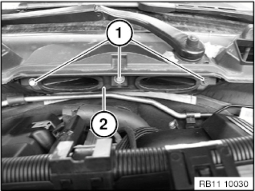</div><br><br><br><br><br>Release screws (1).<br>Remove cover (2).<br><br><br><div class='oxe-image'>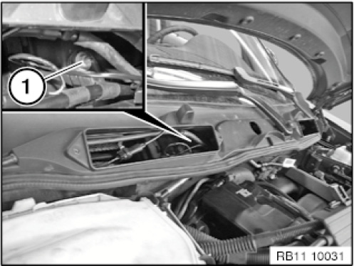</div><br><br><br><br><br>Loosen nut (1).<br><br><br><div class='oxe-image'>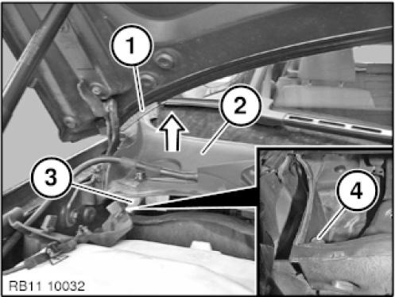</div><br><br><br><br><br>Tape off engine compartment lid (1) with adhesive tape.<br>Lift cover (2) in direction of arrow.<br>Support cover with cloth (3).<br>Release screw (4) of right cover.<br><br><br><div class='oxe-image'>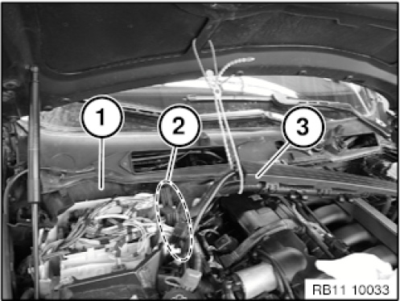</div><br><br><br><br><br>Remove right cover (1).<br>Remove electronics box cover.<br>Release rubber gaskets (2) on wiring harness from electronics box.<br>Tie up wiring harness (3) on engine compartment lid.<br><br><br><div class='oxe-image'>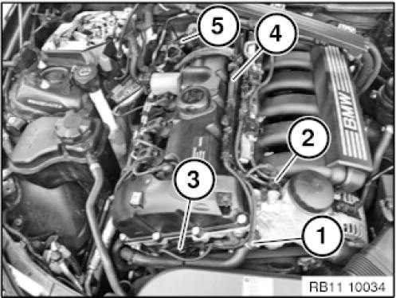</div><br><br><br><br><br>Unlock connector (1) from coolant thermostat and detach.<br>Unlock connector (2) on oil pressure switch and detach.<br>Unlock connector (3) on coolant temperature sensor (3) and detach.<br>Detach connector strip (4) from fuel injection pipe.<br>Unclip oxygen sensor cable (5).<br><br><br><div class='oxe-image'>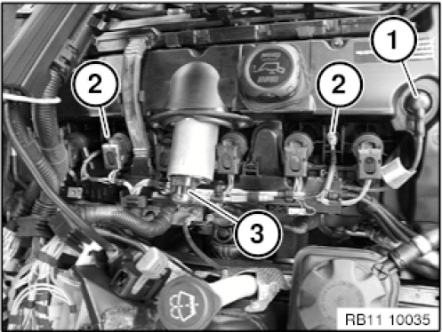</div><br><br><br><br><br>Detach plug connection of VVT sensor (1).<br>Release ground connections (2) on engine.<br>Unlock connector (3) of eccentric shaft servomotor and detach.<br><br><br><div class='oxe-image'>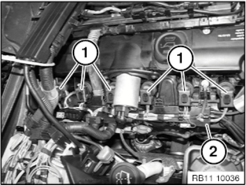</div><br><br><br><br><br>Unlock plug connections (1) of ignition coils and detach.<br>Unlock cable channel (2) of cylinder head cover and detach.<br>Remove ignition coils.<br><br><br><div class='oxe-image'>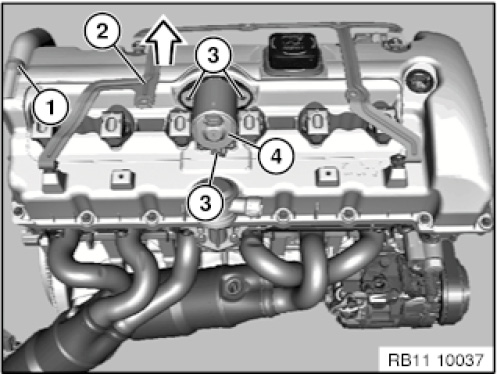</div><br><br><br><br><br>Unlock and detach vent hose (1).<br>If necessary, pull off metal bracket (2) in direction of arrow.<br>Slacken screws (3) from electric servomotor (4).<br>Tightening torque 11 37 3AZ.<br>Remove servomotor (4).<br><br><br><div class='oxe-image'>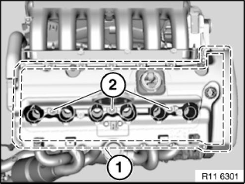</div><br><br><br><br><br><b>IMPORTANT:</b>  Observe different screw lengths.<br><br>Unfasten screws (1) and threaded bolts (2).<br>Tightening torque 11 12 5AZ.<br><br><br><div class='oxe-image'>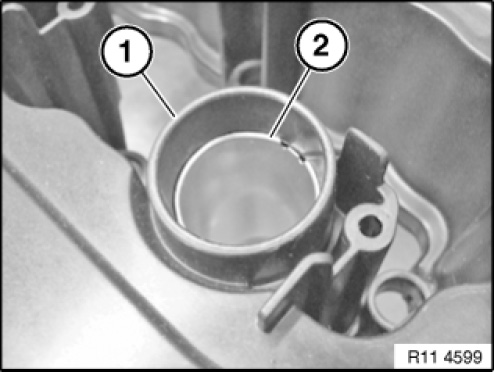</div><br><br><br><br><br>Installation note:<br>Slotted sleeves (2) for guiding ignition coils in cylinder head cover (1) must be replaced.<br>Remove slotted sleeves (2).<br><br><br><div class='oxe-image'>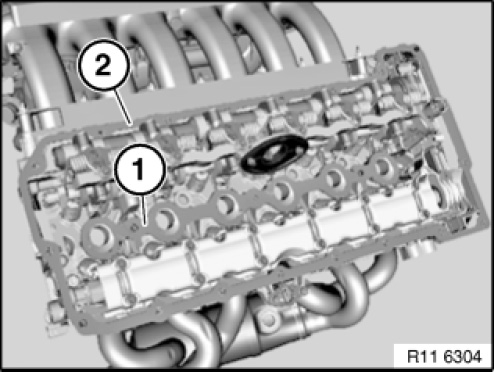</div><br><br><br><br><br>Installation note:<br>Clean all sealing surfaces (1 and 2).<br><br><b>IMPORTANT:</b>  Do not use any metal-cutting tools.<br><br>Installation note:<br>Replace gaskets (1 and 2).<br><br><br><div class='oxe-image'></div><br><br><br><br><br>Assemble engine.<br><br><br><div class='oxe-image'>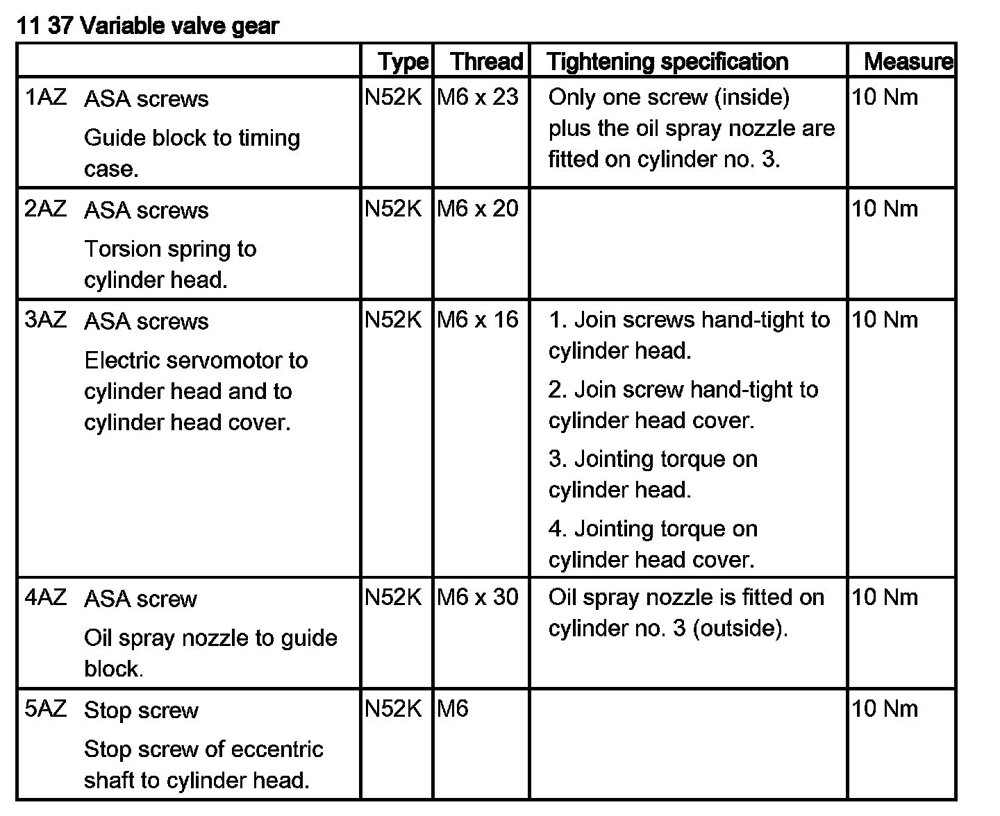</div><br><br><br><br><br><h3>ט:</h3><div class='oxe-image'>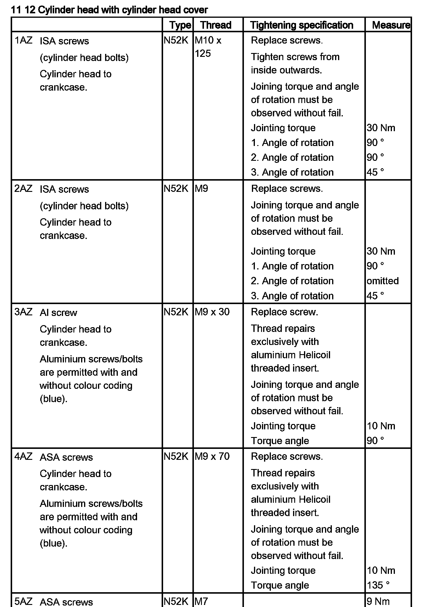</div><br><br><br></div>
<div class="theme-colors footer">
  <i>pro multis</i> · <a href="../about.html">About Operation CHARM</a>
</div>
<script src="../script.js"></script>
</body>
</html>
